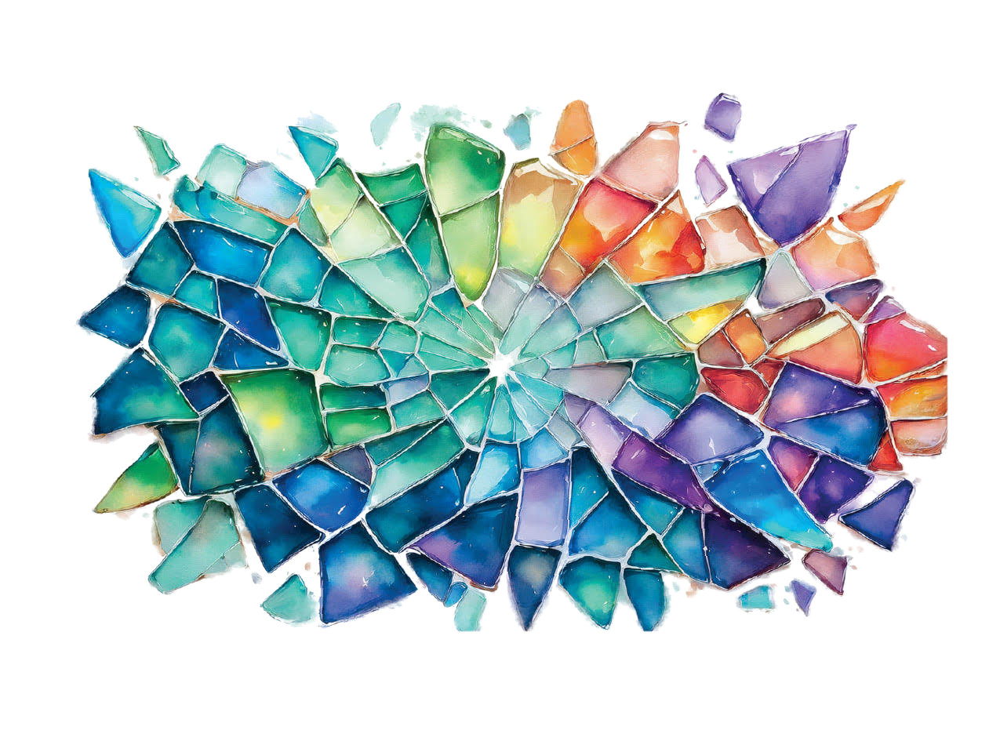
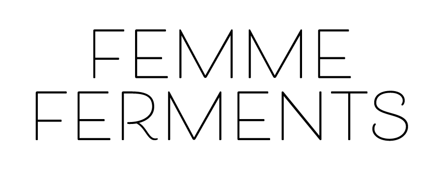
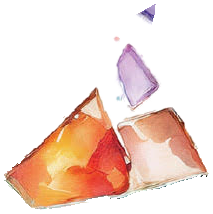
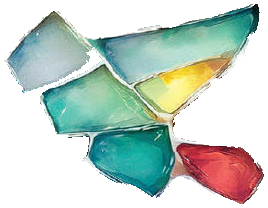
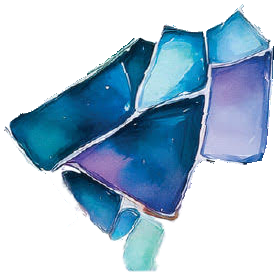
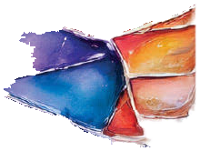
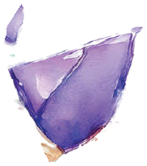
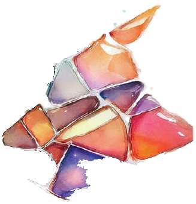

No. 01
Harvest Volunteer
Pick grapes at partner vineyards — no experience necessary, just willing hands and a love of long days outdoors.


Willamette Valley, Oregon

Broken things, gathered with care, become more beautiful than they ever were whole.
Femme Ferments is a nonprofit wine project rooted in Oregon’s Willamette Valley. We turn donated grapes, borrowed cellars, and volunteer hours into bottles that fund real, lasting change — one fracture of color at a time.

Rooted in the Willamette Valley.
Our story begins in the volcanic soil and marine sediment of Oregon’s Willamette Valley — cool nights and patient growers coaxing extraordinary character from every cluster. We don’t own vineyards; we partner with them. Small, family-run sites across the Eola-Amity Hills donate fruit each season because they believe a valley this generous should give back in more ways than wine alone.
“A valley this generous should give back in more ways than wine alone.”
Made by many hands.
Every bottle is assembled from an entire community’s generosity: donated grapes, volunteers who show up for the harvest, borrowed cellar space, and corks donated by valley suppliers. What we lack in budget, we make up for in the number of hands willing to help.
Poised and expressive, this Albariño balances strength and elegance in equal measure — bright, mineral, and quietly commanding.
Elegant, grounded, and quietly powerful — a wine that carries the weight of the season with grace, made for those who understand restraint.

It works because almost everything we use is given, not bought.
Tap each step below to see how a donated grape becomes real, lasting impact.

Every piece makes the picture.
Whatever time, skill, or connection you bring, there’s a place for it in this story.
Pick grapes at partner vineyards — no experience necessary, just willing hands and a love of long days outdoors.

Photography, design, and storytelling that carry our story forward, bottle by bottle.

Organize tastings and launch parties that bring the community together, glass in hand.

Website, logistics, and the quiet nonprofit operations that keep everything running smoothly.

Donate grapes, equipment, or cellar space — the backbone of every vintage we release.

Spread the word and connect us with nonprofits doing the work. Every introduction plants a seed.

Wine is better shared.
Our launch parties and tastings are where the mission becomes tangible — where donors meet volunteers meet the people our wine ultimately supports.
Collaborate! Support! Celebrate!
Every piece makes the picture. Sign up to hear about new releases, volunteer days, and events — straight from the cellar.